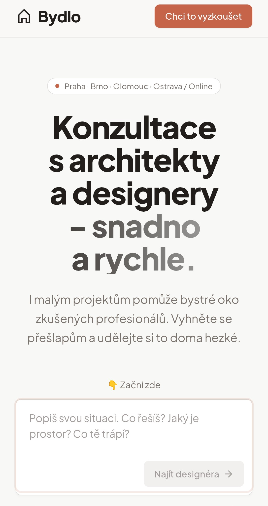
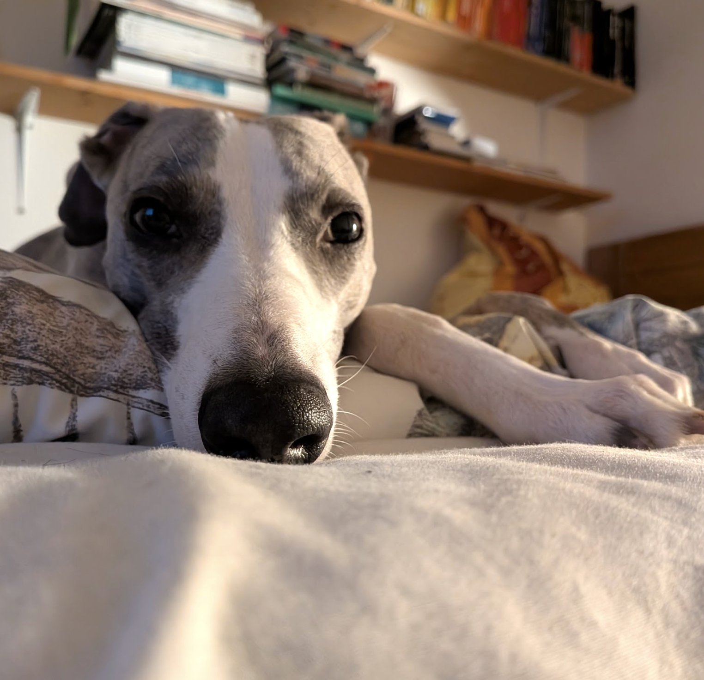
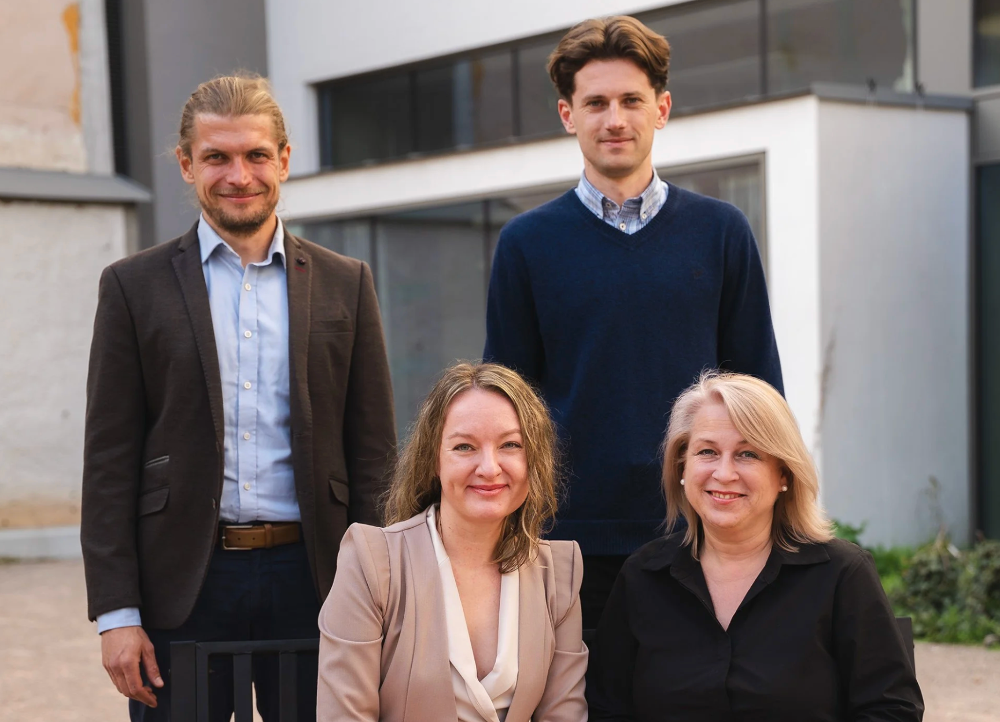
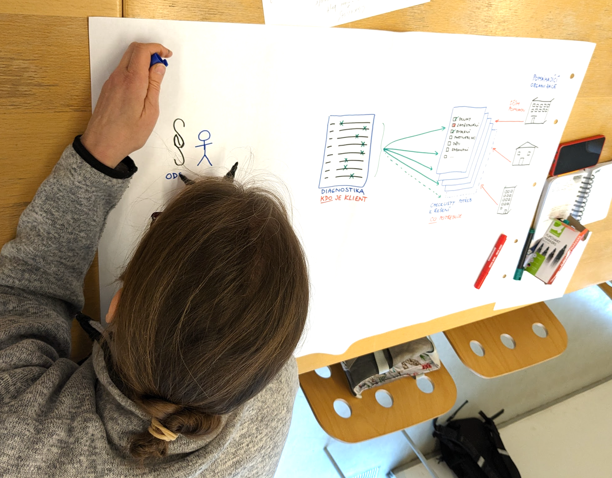
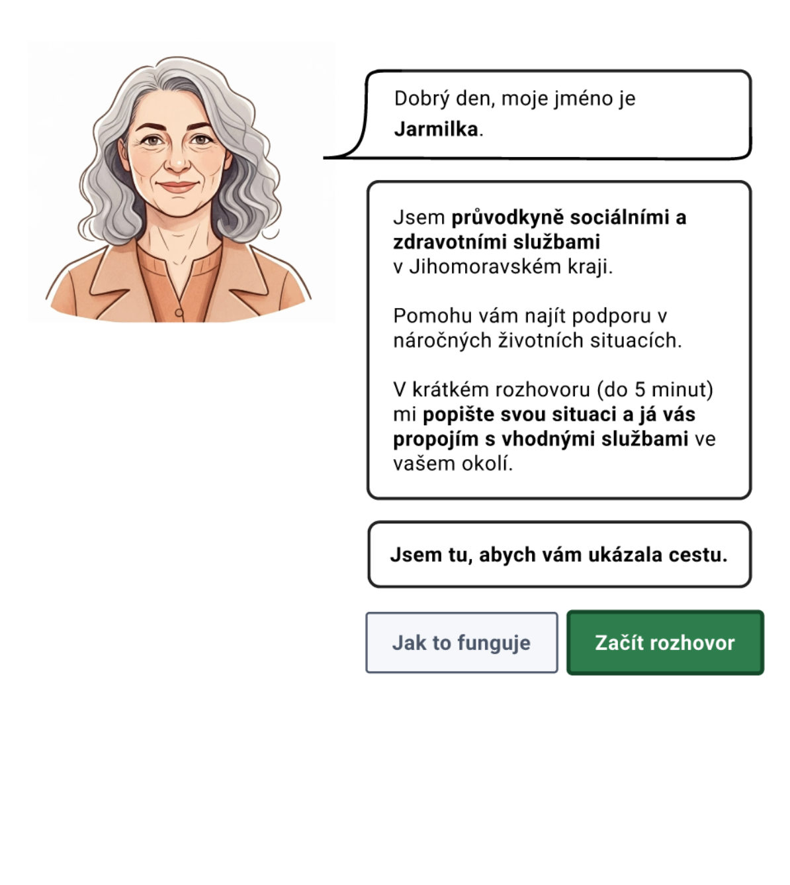

The process isn't dead. It's just different.
How can modern tooling make the design process faster and more accessible to the whole team – without replacing craft.
Erik Vaněk · UX Monday Prague · 4 May 2026
What we'll cover today
- Intro - setting the stage
- Broader context - why this matters now
- Discovery - AI-powered sense-making + demo
- Delivery - prototyping and handoff + demo
- Design for social innovation
A little about myself
- Started in software engineering
- Shifted toward design, product
- Scale-ups · public services · non-profit
- most recently Datamole - data & AI softwarehouse
- Study & teach at KISK, Masaryk University
- Before - hydroponics, curator, poker pro
Before we dig in aka my biases
- Design = discovery + delivery.
- Designers should understand code.
- What happened in tooling over the past ~ year is just wow.
- Handover should live in plaintext and code.
- Stop saying "AI" - it's just how things get done now.
On demos
- I'm running demos from the command line today.
- Same thing in the desktop UI - just not my daily setup.
- Using Claude code, Obsidian, Paper.design, GitHub, VS Code.
- Principles work the same with other tooling.
Context
What's happening out there
The labor market is shifting
Context
Are we enjoying our work more?
Is the design process dead?
I wrote about this in 2024: "Is Coding Dead?"
- AI amplifies existing skills
- Human oversight stays essential throughout
- Prompt quality is itself a craft skill
- Best practices are emerging, but the process stays but (constantly) changes
What has changed
- Writing standard software is a solved problem
- BAU dashboards, reports, forms: done
- Execution cost of coding is collapsing
- SaaS is under pressure
What won't change soon
- Doing the right thing
- Human emotions, aspirations, frustrations
- The value of face time
- Being humane to each other
"If it becomes easier to make more things, it also becomes easier to make the wrong things."
— Karri Saarinen
Designers are masters of process
- Enormous opportunity to shape how experiences are delivered
- Own the full journey - from user need to shipped experience
- Orchestrate workflows, don't just execute tasks
- Don't be afraid to take the lead here
Today: two concrete examples
Demo 1 - Discovery
- AI-assisted qualitative data sense-making
- From brain dump to insights
- Powered by personal second brain
- Making research accessible to the team
Demo 2 - Delivery
- Code-first prototyping
- Spec → PR → preview in one loop
- Handover in text and code
- multiple tools integration
Part 1
Discovery
Bydlo
- Side-project with my friend Franta
- Freelance marketplace for architects and interior designers
- One-off consultations · smaller contracts · new leads
- How does research on something like this actually start?

Step 1: The brain dump
- Walk outside
- Think aloud - pile thoughts on top of each other
- Don't structure yet. Let it be messy.
- or differently - LLM can untangle for you
- Brad Frost calls this "mouth coding"
Step 2: Connect your second brain
- MCP - a universal tool connector
- Lets your agent talk to external tools and data sources
- Think of it as a USB port to other tools
- Connect once → "80/20 head start" on every project
This is context engineering
- MCP connection = directing the agent toward your accumulated knowledge
- Not the internet's average. Yours.
- Output quality reflects your craft - your biases, your blind spots
- Even a messy vault beats none - brief notes over perfect ones
Pick what fits your setup
- Notion · Google Drive · Confluence · Obsidian · a shared folder
- Whatever you have, are allowed to use, or actually like to use
- I use Obsidian
- plain text, vendor-agnostic, backlinks help connect the dots
- The tool choice is secondary.
Now you have a plan
- Research objective
- Interview script - with "pause here, go deeper" instructions baked in
- Recruitment criteria
- Stakeholder map
- All in markdown. In a shared repo.
"Talk me through the last time X happened..."
Now you have transcripts
Accelerating the messy middle with modern tools
Live demo
Demo 1
Qualitative coding · live
"Here are my transcripts. What are the themes?"
My way to code
- Read second brain on coding best practices.
- Write 4-5 codes yourself first - give the AI a starting direction
- "Here are my initial codes. Here's my research objective. Generate a full codebook."
- Iterate until solid. Then hand over the transcripts.
"Here are my transcripts. Here's the codebook. Code these."
The codebook prompt
Research objective: how architects find and manage freelance work
My initial codes (seeds): move trigger · selection criteria · search process · space setup · help-seeking
Read from my second brain: "Open Coding", "Codebook"
Go through each transcript. Grow from 5 to 10-15 codes.
The coding prompt
Finalized codebook is in results/codebook.md
Read from my second brain: "Closed Coding", "Thematic Analysis"
Code all 3 transcripts using only these codes.
Save as one file per code, named with occurrence count.
Flag anything that doesn't fit in a separate file.
Walk away. Come back with fresh eyes.
Now synthesize
- You have coded data. Now what?
- Feed your notes on what good synthesis looks like alongside the coded data
- "I saw this" + "I know this" = insight
- The AI handles the pattern. You bring the judgment.
- MCP reconnects your knowledge
The synthesis prompt
Read: coded data in results/coding/ + research plan
Read from my second brain: "Insight", "Customer research synthesis", "Storytelling"
Form 3-5 insights - not summaries, not findings.
For each: what's true · why it's non-obvious · evidence · design opportunity
Three wins from this workflow
I call it data accessibility
Win 1: The team can query the research
- Markdown files in a shared repo
- Anyone can point their AI tool at it and get up to speed
- No license required. No gatekeeper. Researcher stops being the bottleneck.
Win 2: The client ran the sessions
- High-quality prep artifacts - non-researchers facilitated onboarding
- Script with built-in "pause here, go deeper" prompts
- Client's managers ran more than half the sessions themselves
- PM/CEO colleague: tried Dovetail for a week, too steep a learning curve
- Switched to plain text + LLM
- Time saved went straight into strategy and pivots
You are the gatekeeper.
- Slop is easy to generate. Easy to spot. Hard to undo.
- It's a risk to your professional reputation.
- Don't ship it if you don't like it.
Part 2
Delivery
The context
- 4+ months to find a new place with a partner and a dog.
- I hate the noise of rental portals.
- Custom watchdog capable of scanning:
- dog-friendly listings
- good light conditions
- preferable area in town

How do you filter for this fella? Rental portals don't let you.
What I built
- Scrapes listings from real estate portals
- Scores on hard attributes (area, size, price) and soft ones (dog-friendly, ...)
- Notifies both of us when a listing passes the threshold
- Each of us ranks independently - hot or not
- Match → book a viewing + visit management
Live demo
Demo 2
Paper.design MCP connector + Github-centered workflow
Sunday morning. My partner over coffee.
"Honey, I wish there was an image carousel so I can quickly glance through before diving in fully..."
As easy as that
work on issue 122
Prototyping workflow
- Write the spec in a GitHub issue
- Send Claude code to implement it
- Fine-tune layout with Paper.design
- PR created on GitHub, reviewed by Copilot
- Preview auto-deployed, tests run
- Auto deploy if it's good
The infra looks heavier than it is
- PR auto-previews
- Git workflow
- MCP server connections
- One-time setup - 1-2 hours for someone technical
GitHub SpecKit
- Learn a mental model of GitHub - it's not hard
- Ask your favourite engineer for 30 minutes - they'll probably love explaining it
- Discovery → findings in markdown → SpecKit → engineering handoff
- SpecKit is not a silver bullet - even plain "plan mode" in Claude could help a lot
Part 3
Design beyond screens
Preschool childcare service
- Mid-covid layoffs in hydroponics 😢
- Switched to more analog services
- Designed a preschool childcare service
- Won a medal for it
- Working for a ministry is hard!

Penitentiary onboarding
- Helping people navigate entry into the prison
- One day late to arrive? You better not
- Design as a tool for a systemic change
- Running workshops in prison

Health × social services
- Jihomoravský kraj - intersection of health and social care
- Social workers, health professionals, institutional silos
- designed LLM-based assistant to navigate the system

Innovative teams in public services
- Research with fellow KISK students
- How teams change public administration from the inside?
- Ideation workshop for ministry secretaries (May 2025)
- Co-created with chief state secretary
 inovacnitymystatnispravy.cz
inovacnitymystatnispravy.cz
People/orgs doing great work
- KISK❤️ in Brno - Design department at MUNI
- Pabení agency - worth following
- Roman Hřebecký - go-to person for social innovation
- Zlín design week this weekend - come say hi in my hometown
- MPSV & their innovation department
- Festival kreativní byrokracie in June - let's meet there!
In 20-30 years, many of us will need care.
Someone has to design that experience.
Take a breath
1. You don't need to become technical
The barrier is lower than it looks.
A short conversation with a developer you trust is enough to get started.
Iterate
2. Experiment with your process
What worked 6 months ago is already different.
Start now
3. Jump on to proven parts soon
The later you wait, the harder it gets.
No need to be an early adopter of 'that new thing' - but don't wait until it's too late.
Thank you 🙏
me@erikvanek.com
Let's meet or connect.